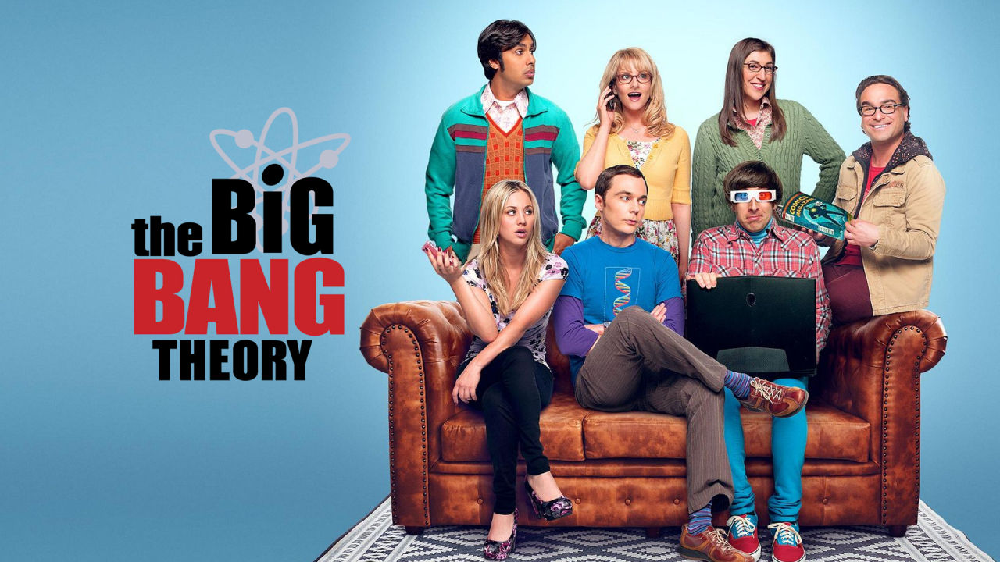
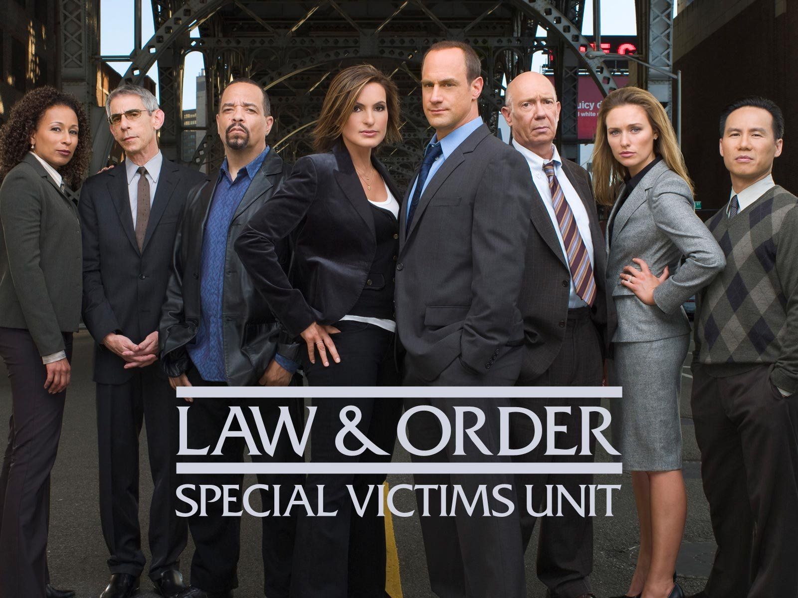
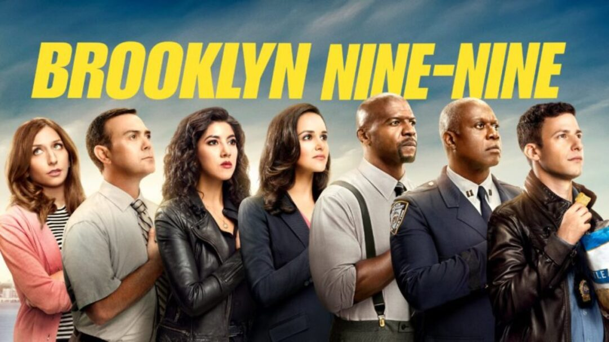
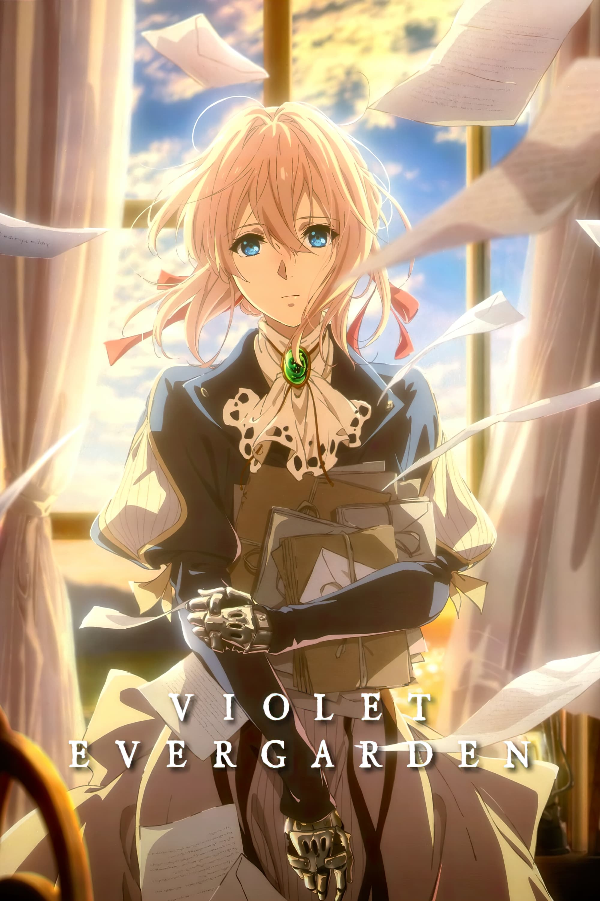
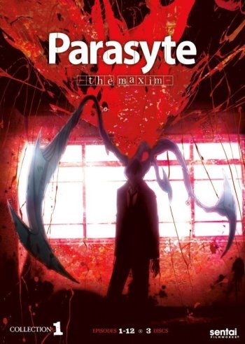

The Big Bang Theory
Leonard y Sheldon son físicos brillantes, el tipo de ""mentes maravillosas"" que entienden cómo funciona el universo. Pero nada de este genio les ayuda a interactuar con la gente, especialmente con las mujeres. Esto empieza a cambiar cuando una bella y poco convencional chica llamada Penny se muda al apartamento de enfrente. Sheldon, el compañero de apartamento de Leonard, está muy contento de pasar las noches jugando boggle klingon con sus amigos Wolowitz y Koothrappali, también cientificos en Caltech. Sin embargo, Leonard ve en Penny un nuevo universo de posibilidades... incluyendo el amor.
Law & Order: SVU
‘Ley y Orden: Unidad de Víctimas Especiales’ es una serie de televisión estadounidense grabada en Nueva York donde es también principalmente producida. Con el estilo de la original ‘Ley y Orden’ los episodios son usualmente "sacados de los titulares" o basados libremente en verdaderos asesinatos que han recibido la atención de los medios.
Brooklyn Nine-Nine
El detective Jake Peralta y el capitán Ray Holt encabezan esta comedia sobre conflictos generacionales en una comisaría de Nueva York. Uno es un detective que no se toma en serio las reglas de sus superiores, mientras que el otro es un inspector empeñado en que madure de una vez y trabaje conforme a las normas del departamento.
Violet Evergarden
Violet Evergarden narra la historia de Violet, una joven la cual desde pequeña fue tomada como un arma de guerra para el mayor Gilbert Bougainvillea, sin embargo, una vez acabada la guerra ella ha dejado el campo de batalla y por ende ha tenido que separarse de éste mismo, sin siquiera poder entender ciertas palabras que recibió del mismo en su último encuentro. Sin embargo, Violet queda a cuidado de un compañero del mayor, Claudia Hodgins, y es recibida por la Familia Evergarden por ordenes de Gilbert. Del mismo modo, Violet comienza a trabajar en la Compañía Postal CH y, conmovida por el oficio de Auto Memory Doll, quienes llevan los pensamientos de la gente y los convierten en palabras, decide convertirse en una con el fin de obtener respuestas sobre las últimas palabras que escuchó de Gilbert.
Parasyte
La trama se centra en un adolescente de 17 años llamado Shinichi Izumi, que vive con sus padres en un barrio tranquilo en Tokio. Una noche, criaturas similares a gusanos llamados «parásitos» aparecen en la Tierra, haciéndo huésped a los humanos al invadir sus cerebros entrando a través de los oídos, la nariz, etc. Uno de estos parásitos intenta entrar por el oído de Shinichi mientras duerme, pero no tiene éxito ya que éste está usando auriculares, por lo que decide otro camino para entrar en su cuerpo y alcanzar el cerebro: su brazo derecho. Debido a que Shinichi pudo evitar que este parásito llegara su cerebro, éste queda limitado y completa toda su maduración en el brazo invadido, haciendo que ambos seres conserven su intelecto y personalidad separada.